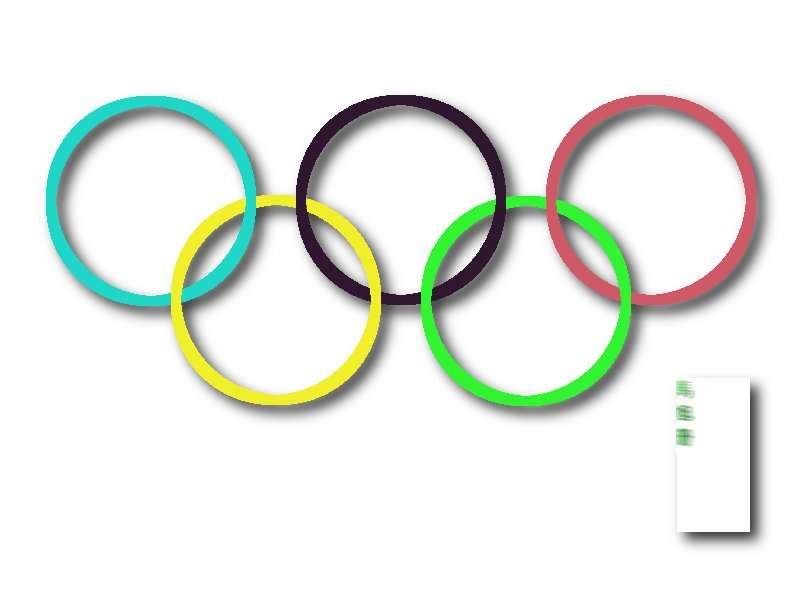

2011-2012 第二学期八年级图像处理教学设计
作者：TeliuTe 来源：基础教程网
二十三、学会叠加选区 返回目录 下一课
（一）教学设计
1、学习目标：学会叠加选区
2、注意事项：可以选中多个图层
3、教学过程：
1）教师准备学案和板书；
2）学生整队进入，开机抄黑板上笔记；
3）教师讲解板书演示操作；
4）学生打指法、日志、完成操作；
5）教师打勾记录学生指法成绩，检查日志和操作；
注：学生抄完笔记就开始打指法、日志，老师讲完后再继续完成；
（二）板书设计(学生笔记)
第23课 学会叠加选区
1、打开 22.xcf，修改图层名，分清层次
2、选择框选、叠加模式选项
3、选中蓝图层、点蓝色，再选黑图层，点黑色
4、点“滤镜、光源和阴影、投影”
5、另存为 xcf和jpg
操作图示：

（三）课后记
两个班分别上，下节课合到一起
跳掉一节，然后就拉平了
--
操作挺快的没什么太多的问题
准备下节开始把基本概念过一下
--
一直没找到合适的方法，没有相应的实例
找本教材看看，挑些有用的知识点
--
练了这么久，可以再学理论了
把一些常用的名词和界面过一遍
--
吵的学生拿笔杆敲脑袋，不至于敲太大力气
主要是形式，并不需要多大的疼痛
--
把爱说话的挑出来重点防范，在萌芽状态就制止
吃零食也是个问题，也得花时间去检查
--
把爱扔垃圾集袋的找出来，还要一个相应的惩罚机制
光批评几句用处不大，下回还要带吃的来
--
返回目录 下一课
本教程由86团学校TeliuTe制作|著作权所有
基础教程网：http://teliute.org/
美丽的校园……
转载和引用本站内容，请保留版权信息和本站链接。